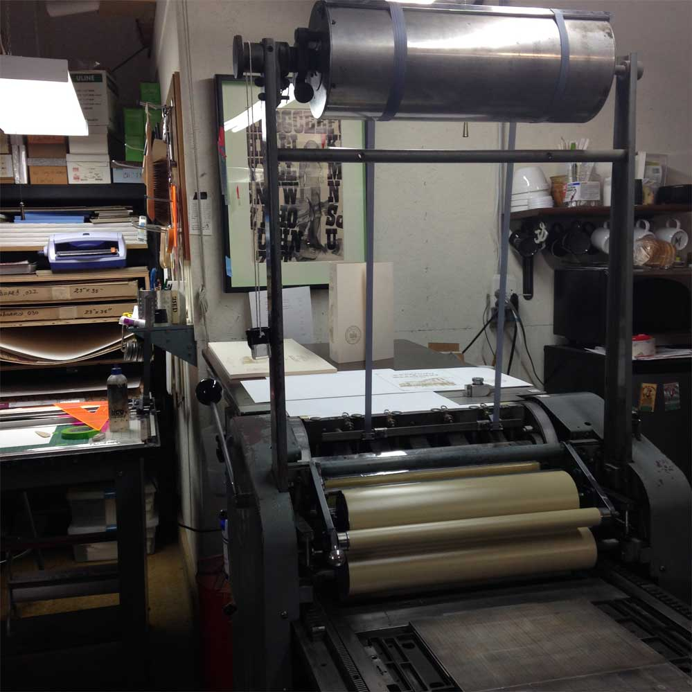
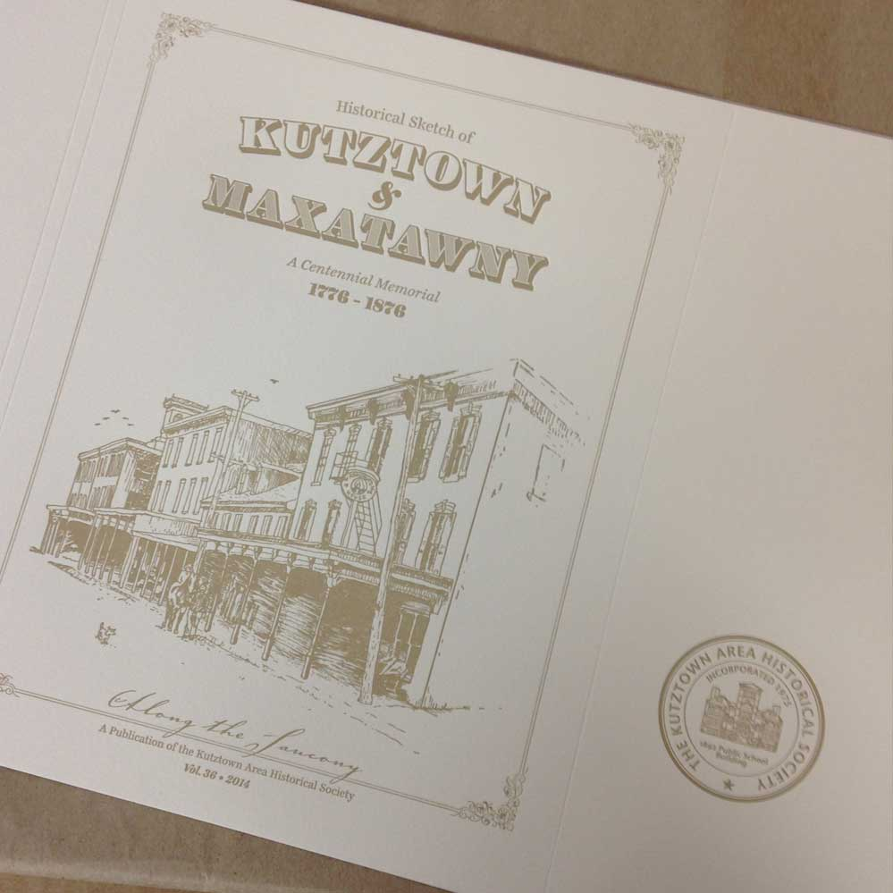

Kutztown Area Historical Society
Full 86 page layout design • Letterpressed Book Cover
Each year, the Kutztown Area Historical Society (KAHS) does a limited edition scholarly publication as a gift for its members. A student designer is chosen from the junior class in Communication Design to design, execute, and oversee the project from sketches to completion. Working with Arren Dawinan (illustrations) we designed the book inside and out. The overall project took approximately 6 months to complete, from start to finish. For the special edition texts, we also went to Lead Graffiti in Newark, DE to letterpress 50 special edition covers.

On June 29th, 2014, Arren, Professor Lemon and I travelled to Lead Graffiti in Newark, DE to letterpress the book covers.
 